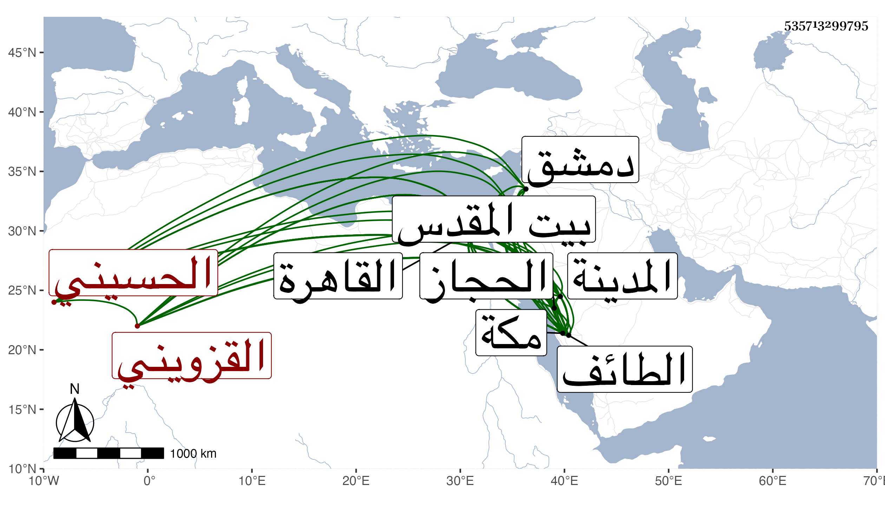

0902Sakhawi.DawLamic.ITO20230111-ara1.EIS1600.535713299795
Biography ID: 535713299795
874
إسحاق بن عبد الجبار بن محمود بن فرفور الحسيني القزويني . انتمى للشيخ محمد بن قاوان وتزوج ابنته من ابنة عمه قبائل ونال وجاهة وماتت زوجته تحته بالقاهرة فلم يكن ذلك بقاطع لصهره عن تقريبه بل زادت وجاهته وقدم القاهرة معه وبمفرده غير مرة وتولع يسيرا بالاشتغال في النحو والصرف وأصول الدين وصار له إحساس في الجملة ودخل دمشق فما فوقها وزار بيت المقدس ورجع في موسم سنة تسع وثمانين إلى مكة فواجه القاصد بموت صهره فعاد لينظم الأمر لورثته وقاسى في رجوعه مشقة وما سلم إلا ببذل مال ولما قدم نزل في تربة السلطان وهرع الناس لتعزيته وكنت منهم ثم تحول لقاعة الماحوزي وتزوج ست الخلفاء سبطة ابن البلقيني وابنة أمير المؤمنين واغتبط بها وبعد أشهر سافر في البحر صحبة الخواجا علي بن ملك التجار محمود خواجا جهان بن قاوان وكان قدم في الركب الموسمي واستمر الشريف بمكة حتى بلغته وفاة زوجته فبقي يسيرا ثم عاد إلى القاهرة بعد أن زار المدينة في وسط السنة ومعه الشهابي بن حاتم المغرب وكذا زار الطائف وبعد ضعفه بمكة أشهرا بحيث كاد أن يموت وأعرض عن تركتها ، كثر تردد الناس إليه بالقاهرة حتى كان ممن يجيئه للعب الشطرنج الجمال عبد الله المكوراني وربما قرأ صاحب الترجمة عليه ورام القراءة على فرفضه بعض أصحابنا حسبما بلغني ولله الحمد ولم يتخلف عن المجيء إليه من الأمراء كبير أحد بل اجتمع عنده الأتابكي وأمير سلاح ومن دونهما من المقدمين فضلا عن غيرهم ويقال أن له عند الملك وجاهة بحيث انتمى إليه بسببها غير واحد مع كونه متوسط الحال في الإحسان إلا لمن لا ينهض للتقصير في جانبهم ، ولما قدمت مكة في موسم سنة ست وتسعين قصدني بالسلام بالإهداء وسمعت أنه تزوج ابنة أخرى للشيخ محمد من أمه ورايته على خير من طواف وأدب ، وتزايدت وضاءته ، وشكالته وعمل في سنة سبع وتسعين وليمة للمولد النبوي سمعت من يصف سماطها بأمر عظيم وأن الكلفة له ترتقي لمئين من الدنانير وعم الناس بالإرسال منها ورأيته زائد الإعجاب بنفسه بحيث يرقى نفسه على صاحب الحجاز بل قال لي إنه رجح نفسه على الخيضري عند السلطان وأرسلت له بمؤلفي في أهل البيت كل هذا مع تردد بعض أصحابه من العجم لقراءته عليه وصار ممن يرغب في لتردد إليه إما للرغبة أو الرهبة بحيث أنه ربما يوصى له بعض التجار ، ورأيت بعض أهل بلاده يصف أوليته بالتقلل الزائد وإن ما فيه من الثروة من جهة صهره سيما وقد قسمت لتركة على وجه لا أخوض فيه والله أعلم بحقيقة أمره اعتقادا وانتقادا وتعففا وتشرفا .
